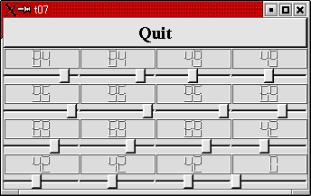

トップページ＞＞＞
「ぷろぐらみんぐ」目次＞＞＞
「Qt Tutorial Index Page」
Chapter 7: One Thing Leads to Another
初版作成：2002/01/01
- ソースコード
- 解説
- コンパイル・動作確認
- いじくりまわす
- 付録：lcdrange.h
- 付録：lcdrange.cpp
- 付録：main.cpp

今回の例ではシグナルとスロットを使ったカスタムウィジェットの作成方法を示します。んで、シグナルやスロットをコネクト
するための（ちょっと）複雑な方法も例示する予定です。
とりあえず後の拡張のため、いよいよソースコードを分離します。ソースコードの内容は末尾に「付録」として添付して
おきました。
冒頭に実行画面のスナップショットをしめしておきました。
というわけで、今回からソースコードは最後にまとめて示すようになります。ここでは各ソースコードの概要だけ示して
おきます。
lcdrange.h：前回作成したLCDRangeカスタムウィジェットをmain.cppから分離します。
lcdrange.hはLCDRangeクラスの宣言をしておきます。
lcdrange.cpp：こっちはLCDRangeクラスの実装部です。
main.cpp:前回通りのMyWidgetクラスとmain関数が納められています。
lcdrange.hがインクルードされています。
なお、今回もスロットとシグナルを独自定義していますが、mocコマンドを打ち込む必要はありません。
というのもクラス定義をファイルに分離しておくと、どうやらtmakeあたりがmocファイルの自動生成やら何やらを行ってくれる
ようなのです。mocファイルのインクルードを自前でやる必要もなくなります。
目次に戻る
それでは各ファイルごとに、ポイント部分の解説を行っていきます。
lcdrange.h
このファイルはChapter 6からLCDRangeクラスの宣言部に関して取り出したものです。クラス定義ファイルとして付け足された
部分を中心に説明していきます。
#ifndef LCDRANGE_H
#define LCDRANGE_H
ここはヘッダファイルの多重インクルードを防ぐためによく使われている古典的な手法です。もしもLCDRANGE_Hが既にdefine
されているなら、既にインクルード済みですのでここから#endifに至るまで（つまりこのファイル全て）無視されます。
#include <qvbox.h>
このクラス宣言では、継承元にQVBoxを使いますので、qvbox.hをインクルードしておきます。クラス宣言中でQWidgetが引数
の型として使われていますが、んなもん最初っからqvbox.hによりインクルードされてますのでへーきです。
class QSlider;
これも宣言に関する古典的な手法の一つですが、あんまり使われていません。QSliderクラスはインターフェイスで実際に
使っているわけではなく、本当に必要なのは実装部の方です。そんなわけでヘッダーファイルではqslider.hのインクルード
まではせずに前方宣言で認識させるだけしておき、実装部の.cppファイルの方でqslider.hをインクルードするわけです。
こうしておく利点は大きなプロジェクトになってくるとはっきりしてくるようです。あるヘッダーファイルを変更しても
その影響範囲を抑え、再コンパイルの必要なファイルを少なくしてくれるようです。
私自身はそんなに大きなプログラムなんて書いたことがないので原文の意味もいまいちつかみ取れ無いのですが・・・
まあ、とりあえずこう書いておくと後で良いことありそうなんだな、と素直に従っておきましょう。
class LCDRange : public QVBox
{
Q_OBJECT
public:
LCDRange( QWidget *parent=0, const char *name=0 );
Q_OBJECTに注意して下さい。
このマクロはシグナルやスロットを実装したクラスではかならず、そのメンバの定義部の先頭に記述しておく必要があります。
このマクロはシグナルやスロットの実装でお世話になるメタオブジェクト(moc)ファイル内で定義される関数を展開してくる
ようです。
int value() const;
public slots:
void setValue( int );
signals:
void valueChanged( int );
ここにある三つのメンバが、このウィジェットと他のコンポーネントを結びつけるためのインターフェイスとなります。
前回のChapterまではLCDRangeは本当の意味でのインターフェイスを備えていたとはいえませんでした。
value()はLCDRangeクラスの保持する値、valueへのアクセスを提供するpublicなメンバ関数です。setValue()は本チュートリアル
初登場となるカスタムスロットです。valueChanged()は初登場となるカスタムシグナルです。
・・・といってもChapter 5あたりでさんざんいじくり回していますが。
スロットは普通のC++関数として実装されます。
シグナルはChapter 5でいじくり回したとおりmocファイルにて自動的に実装されます。実は、シグナルは C++の protected
関数として実装されます。そのためシグナルはそれが定義されているクラス自身か、そのクラスから派生したクラスからしか
送出(emit)できません。
valueChanged()シグナルは名前からも予想できる通りLCDRangeの値が変わったときに送出されます。
（次の一文ちょっと翻訳できなかったので原文のまま載っけます）
This is not the last signal you'll see called somethingChanged().
lcdrange.cpp
このファイルもヘッダファイル同様、Chapter 6から実装部分に関するところを抜き出して、必要なヘッダファイルとかを
インクルードしたものです。Chapter 6の実装と比べて目立って違うところを解説します。
connect( slider, SIGNAL(valueChanged(int)),
lcd, SLOT(display(int)) );
connect( slider, SIGNAL(valueChanged(int)),
SIGNAL(valueChanged(int)) );
これはLCDRangeのコンストラクタからの抜粋です。
最初のconnectは今まで見てきたのと同様ですが、二番目のconnectは引数が三つしかありません。
引数が三つのconnectとゆーのは、それが使われているオブジェクト自身のシグナルかスロットをconnectするように
なっています。そんなわけで、二番目のconnectはQSliderのvalueChanged()シグナルとLCDRangeのvalueChanged()シグナルを
connectしているわけです。
こうしてサンプルに載っている以上、シグナルとシグナルをconnectすることは全く問題ないわけです。最初のシグナルが
送出されると続くシグナルもまた送出されます。
ユーザーがスライダを操作したとき何が起こるか見ていきましょう。
スライダは自分自身の値が変更されたことを感知し（これ自体はQSliderが実装してます）、valueChanged()シグナルを送出
します。このシグナルはまずQLCDNumberのdisplay()を発動し、LCDRangeのvalueChanged()シグナルを送出します。
QLCDNumberのdisplay()スロットの発動によってLCD表示値を更新し、LCDRange自身のvalueChanged()シグナルが送出されます。
connectする順番は実際の実行順序とは関係ないことに注意して下さい。今回の例ならLCDRange::valueChanged()が
QLCDNumber::display()よりも先に送出される場合もあるということです。
int LCDRange::value() const
{
return slider->value();
}
今回のvalue()の実装では単純にQSliderのvalue()へフォワードしているだけです。
void LCDRange::setValue( int value )
{
slider->setValue( value );
}
今回のsetValue()の実装も又、QSliderのsetValue()へフォワードしているだけです。QSliderとLCDNumberはconnectされて
いますので、setValue()でスライダの値を変更すると自動的にLCDNumberの値も変更されることに注意して下さい。
加えて、QSliderは（現在設定されている）範囲外の値がsetValue()されてくると自動的に値を調節してくれます。
main.cpp
LCDRange *previous = 0;
for( int r = 0 ; r < 4 ; r++ ) {
for( int c = 0 ; c < 4 ; c++ ) {
LCDRange* lr = new LCDRange( grid );
if ( previous )
connect( lr, SIGNAL(valueChanged(int)),
previous, SLOT(setValue(int)) );
previous = lr;
}
}
前回のメイン部分から丸写しです。LCDRangeクラスの実装と、MyWidgetコンストラクタ内でLCDRangeオブジェクトを16個作って
た部分とかを除きました。んでもって新たにシグナルとスロットをちょっと変な形でつなげてみました。
それぞれのvalueChanged()シグナルは、その一つ前に生成されたLCDRangeオブジェクトのsetValue()スロットとconnectされます。
LCDRangeはsetValue()されるとvalueChanged()シグナルを送出しますので、これによって一風変わったシグナル - スロットの
チェインを作ることができます。
目次に戻る
んじゃあ、コンパイルしてみましょう。
[fenjin@murasame t07]$ ls
lcdrange.cpp lcdrange.h main.cpp
[fenjin@murasame t07]$ progen -n t07 -o t07.pro
[fenjin@murasame t07]$ tmake -o Makefile t07.pro
[fenjin@murasame t07]$ make
g++ -c -pipe -Wall -W -O2 -DNO_DEBUG -I/usr/lib/qt/include -o lcdrange.o lcdrange.cpp
g++ -c -pipe -Wall -W -O2 -DNO_DEBUG -I/usr/lib/qt/include -o main.o main.cpp
ここでmocファイルを生成して・・・
/usr/lib/qt/bin/moc lcdrange.h -o moc_lcdrange.cpp
mocファイルをコンパイル。
g++ -c -pipe -Wall -W -O2 -DNO_DEBUG -I/usr/lib/qt/include -o moc_lcdrange.o moc_lcdrange.cpp
最後に一斉にリンクして t07 バイナリを生成してます。
g++ -o t07 lcdrange.o main.o moc_lcdrange.o -L/usr/lib/qt/lib -L/usr/X11R6/lib -lqt -lXext -lX11 -lm
[fenjin@murasame t07]$ ls
Makefile lcdrange.h main.cpp moc_lcdrange.cpp t07*
lcdrange.cpp lcdrange.o main.o moc_lcdrange.o t07.pro
んで、実行ファイル t07 を実行すると冒頭に示したようなウインドウが表示されるわけです。上部のQuitボタンをクリック
するとアプリケーションは終了します。
動作に関しては・・・main.cppのconnectのおかげでなんだか変な動きします。楽しんでやって下さい。
目次に戻る
・・・今回はあんまりいじくり回すようなネタが思いつかないので、お休みとさせていただきます。
う〜〜ん・・・何か、あります？
目次に戻る
#ifndef LCDRANGE_H
#define LCDRANGE_H
#include <qvbox.h>
class QSlider;
class LCDRange : public QVBox
{
Q_OBJECT
public:
LCDRange(QWidget *parent=0, const char *name=0);
int value() const;
public slots:
void setValue(int);
signals:
void valueChanged(int);
private:
QSlider *slider;
};
#endif //LCDRANGE_H
目次に戻る
#include <qslider.h>
#include <qlcdnumber.h>
#include "lcdrange.h"
LCDRange::LCDRange(QWidget *parent, const char *name)
: QVBox(parent, name)
{
QLCDNumber *lcd = new QLCDNumber(2, this, "lcd");
slider = new QSlider(Horizontal, this, "slider");
slider->setRange(0,99);
slider->setValue(0);
connect(slider, SIGNAL(valueChanged(int)), lcd, SLOT(display(int)));
connect(slider, SIGNAL(valueChanged(int)), SIGNAL(valueChanged(int)));
}
int LCDRange::value() const
{
return slider->value();
}
void LCDRange::setValue(int value)
{
slider->setValue(value);
}
目次に戻る
#include <qapplication.h>
#include <qpushbutton.h>
#include <qlcdnumber.h>
#include <qfont.h>
#include <qvbox.h>
#include <qgrid.h>
#include "lcdrange.h"
class MyWidget : public QVBox
{
public:
MyWidget(QWidget *parent=0, const char *name=0);
};
MyWidget::MyWidget(QWidget *parent, const char *name)
: QVBox(parent, name)
{
QPushButton *quit = new QPushButton("Quit", this, "quit");
quit->setFont(QFont("Times", 18, QFont::Bold));
connect(quit, SIGNAL(clicked()), qApp, SLOT(quit()));
QGrid *grid = new QGrid(4, this);
LCDRange *previous = 0;
for(int r=0; r<4; r++) {
for(int c=0; c<4; c++) {
LCDRange *lr = new LCDRange(grid);
if(previous)
connect(lr, SIGNAL(valueChanged(int)), previous, SLOT(setValue(int)));
previous = lr;
}
}
}
int main(int argc, char **argv)
{
QApplication a(argc, argv);
MyWidget w;
a.setMainWidget(&w);
w.show();
return a.exec();
}
目次に戻る
トップページ＞＞＞
「ぷろぐらみんぐ」目次＞＞＞
「Qt Tutorial Index Page」